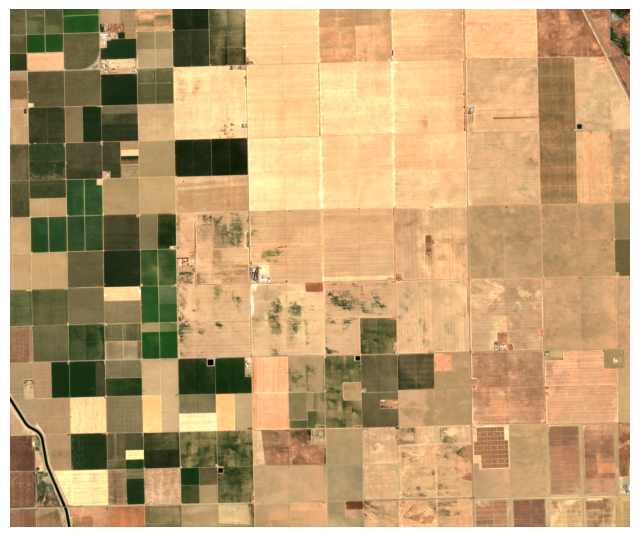
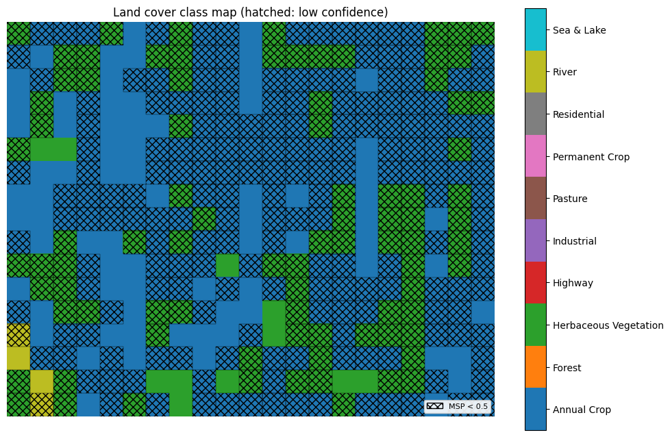
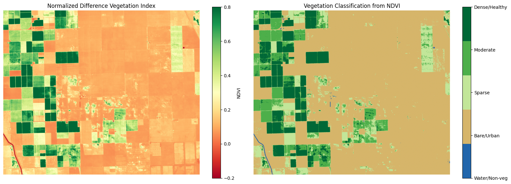
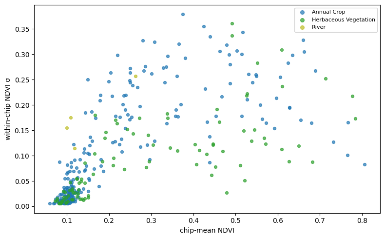
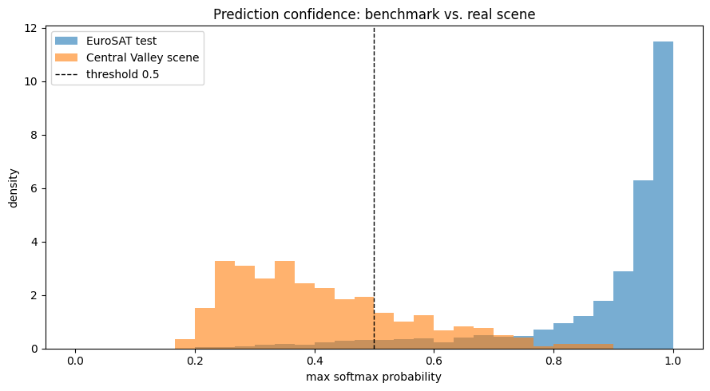
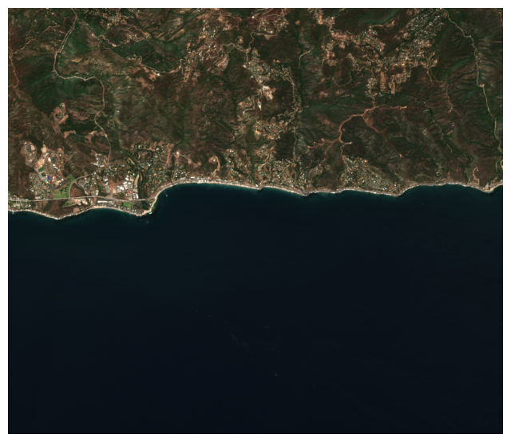
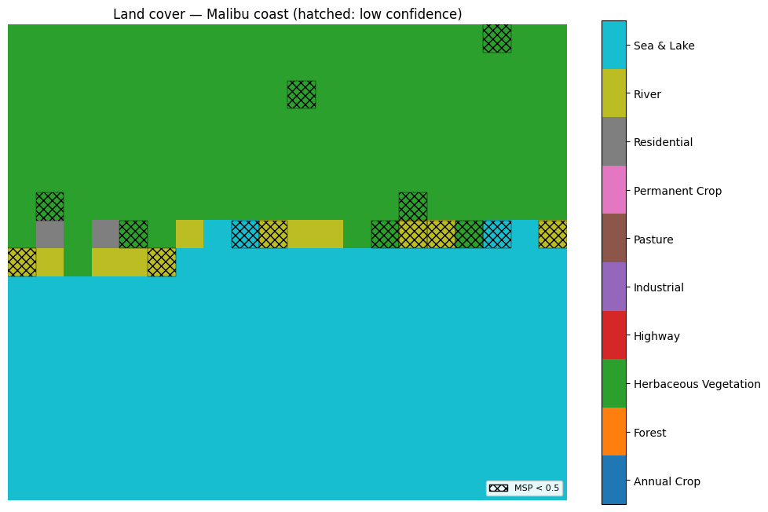
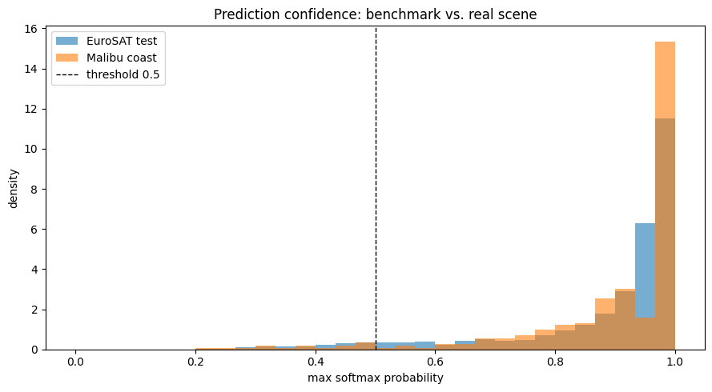

Benchmark Land-Cover Classification on Operational Sentinel-2 Imagery
This project develops a Python framework for applying a benchmark-trained land-cover classifier to arbitrary operational Sentinel-2 scenes and characterizing how its performance degrades away from the benchmark. The framework fine-tunes a pretrained ResNet-18 on the ten-class EuroSAT dataset, then runs the trained model over full Sentinel-2 Level-2A scenes retrieved from Microsoft Planetary Computer: bands are harmonized to the EuroSAT radiometric and spectral convention, tiled into 64×64 chips, classified with per-chip confidence, and reassembled into a georeferenced land-cover map. An independent, physics-based NDVI computation on the same scene provides a second opinion, and the per-chip maximum softmax probability provides an out-of-distribution signal. We apply the framework to two California scenes — a Central Valley agricultural landscape and the Malibu coastline — and use the disagreements among the classifier, the spectral index, and the confidence signal to separate preprocessing (calibration) effects from fundamental limits of benchmark-to-operational transfer. The study is motivated by the gap between benchmark accuracy and operational reliability that governs whether a curated-dataset classifier can be trusted on real sensor feeds.
Project code and a reproduction notebook following this study are available.
Motivation
Curated image-classification benchmarks report accuracy on data drawn from the same distribution they were built from. EuroSAT1 is representative: it contains roughly 27,000 Sentinel-2 patches, each 64×64 pixels and a relatively homogeneous land-cover class, on which a modestly-sized convolutional neural network reaches the mid-90s in test accuracy within a few training epochs. In contrast, a real Sentinel-2 scene is a full swath at arbitrary geography and season; tiled to the benchmark’s chip size, an individual tile may contain multiple land-cover types and may have different atmospheric and radiometric conditions relative to the training set.
The operationally relevant question is thus how well the benchmark-trained classifier performs on arbitrary scenes and whether the model’s own confidence shows when it is operating outside its competence. Here we explore two orthogonal probes on the same scenes: the normalized difference vegetation index (NDVI), which depends on the measured spectral radiance and is independent of the training distribution, and the classifier’s softmax confidence, which reports how typical each tile is of that distribution. Interpreting either probe first requires establishing that the benchmark model and the operational scene are placed on a common radiometric footing, so that disagreements reflect the scene rather than the preprocessing.
Approach
The framework integrates three elements: a classifier fine-tuned on the benchmark, a scene-inference bridge that carries the trained model to operational imagery through an explicit calibration layer, and two probes of each scene that are independent of the classifier — a physical vegetation index and the model’s own softmax confidence.
We fine-tune a pretrained (via MoCo2 self-supervised learning) 18-layer residual neural network, obtained via TorchGeo3, on EuroSAT’s ten classes, reaching test accuracy consistent with the published benchmark. To apply the trained model to an operational scene, the framework identifies and retrieves the scene from the Planetary Computer, harmonizes its bands to the EuroSAT radiometric and spectral convention, tiles it into 64×64 chips (each covering 640 m on the ground), classifies each chip, and reassembles the predictions and their per-chip confidences into georeferenced maps.
Crucially, EuroSAT chips are derived from Sentinel-2 Level-1C (top-of-atmosphere) products, while the Planetary Computer serves Level-2A (bottom-of-atmosphere Earth surface reflectance) scenes. The framework corrects several systematics between the two data levels. First, the band ordering is matched to that of EuroSAT and asserted against the installed weights. The cirrus band B10, present in L1C but discarded after atmospheric correction in L2A, is zero-filled. We select for scenes with minimal cloud cover, so expect the corresponding L1C B10 normalized reflectance values to be of order 0.001, close to the zero we assume (in contrast, the reflectance of the other bands is typically ≳ 0.1). In addition, for ESA’s processing baseline version 4.00 and later, a radiometric offset of +1000 DN (“digital numbers”, i.e. raw sensor units) is applied across L2A bands; this is subtracted in our code. Finally, the 10/20/60-m native band resolutions are resampled to a common 10-m grid.
One systematic is left uncorrected: the L1C-to-L2A transition from top- to bottom-of-atmosphere reflectance removes atmospheric effects that the EuroSAT training data still contains. This could amount to a difference of hundreds of DN in the blue and visible bands, leaving served scenes darker than the model’s training inputs. Correcting it on-footprint would require L1C for the same scene from a second catalog; here we simply document it as a limitation of our approach.
Our two probes are independent of the classifier in complementary ways. NDVI is a deterministic function of surface reflectance, computed directly on each scene and ignorant of the training distribution. The per-chip maximum softmax probability (MSP) reports instead how typical each tile of the scene is of that distribution, the standard baseline signal for out-of-distribution inputs.4 Disagreements among the classifier’s labels, the physical index, and the confidence localize what each is and is not sensitive to.
Results
Central Valley scene
We first apply the framework to an agricultural scene in California’s Central Valley (late June, roughly 13 km across), a landscape broadly comparable in land use to the European farmland that dominates EuroSAT.



The model assigns the majority of the scene to the Annual Crop class, with a minority of chips labeled Herbaceous Vegetation as well as a few falling under River. NDVI on the same scene resolves a clear active/fallow structure that does not appear to be distinguished by the classifier. To compare the learned labels against the physical index on a common footprint, we aggregate the NDVI field, which has 10-m spatial resolution, onto the classifier’s grid of 640-m chips and summarize per predicted class:
| Predicted class | Chips | Mean NDVI | Within-chip σ | Mean MSP |
|---|---|---|---|---|
| Annual Crop | 257 | +0.216 | 0.102 | 0.432 |
| Herbaceous Vegetation | 96 | +0.284 | 0.089 | 0.375 |
| River | 4 | +0.148 | 0.175 | 0.442 |

Three features are apparent. First, the two vegetation classes are not separated by greenness: their mean NDVI ranges overlap, and the per-chip scatter in Figure 2 shows no clustering. The greenness structure NDVI captures lies within both the Annual Crop and Herbaceous Vegetation classes rather than between the two labels. The classifier thus resolves land-cover type (cropland) while remaining insensitive to vegetation state (active versus fallow), and NDVI resolves the reverse; the two views are along orthogonal axes. Second, within-chip NDVI standard deviation does not distinguish the two vegetation classes either (both ≈ 0.09–0.10); its one elevated value belongs to River (0.175), consistent with the presence of both water and land in those chips. Third, the Annual Crop versus Herbaceous Vegetation assignment has no correlate in any variable available here — greenness, within-chip heterogeneity, or spatial position — and it is not attributable to in-domain class confusion: on the EuroSAT confusion matrix (not shown here) both classes are well separated, with their residual errors falling primarily on the Permanent Crop or Pasture classes, none high enough to appear in this scene.

The per-chip model confidence clarifies this complementarity. Maximum softmax probability for all three classes falls in the range 0.38–0.44 (Table 1), far below the near-saturated confidence the model exhibits on EuroSAT test data. The classifier is not drawing the Annual Crop versus Herbaceous Vegetation distinction with conviction; it is instead assigning low-confidence labels near a decision boundary. Across the full scene, the confidence distribution (Figure 3) is shifted markedly toward lower values relative to the EuroSAT test set, and with a 0.5 threshold most of the scene is flagged low-confidence, as shown in Figure 1 (b). The flagged chips are not uniformly distributed: the higher-confidence chips are weakly concentrated over the active, high-NDVI fields (Pearson r = 0.21 between per-chip NDVI and confidence), suggesting that the model is somewhat more confident on tiles resembling the predominantly-green crops in its training set.
Malibu coast scene
We next apply the same framework to a coastal scene spanning the Santa Monica Mountains and the Pacific Ocean near Malibu, California, including open ocean, the urban corridor along the Pacific Coast Highway, and Mediterranean chaparral.


This scene is classified with substantially higher confidence than the Central Valley one. Open water is assigned to Sea & Lake, the chaparral hillsides are assigned to Herbaceous Vegetation, and the coastal strip to Residential and River, neither of which literally exist in the scene, but are sensible substitute classes for the largely commercial buildings and the land/water boundary along the strip. Confidence is high across most of the scene and drops only along the immediate coastline, where 640-m chips mix water, beach, and developed land with no single corresponding EuroSAT class. The scene’s confidence distribution (Figure 5) closely tracks the EuroSAT test set, in contrast to the Central Valley’s leftward-shifted distribution.

The contrast between the two scenes indicates that in-distribution behavior for this model is governed less by geographic or land-use familiarity than by the resemblance of individual chips to EuroSAT’s curated, single-cover tiles. At 640 m, the Malibu scene resolves into large, near-homogeneous regions — uniform ocean, continuous chaparral, contiguous urban strip — each closely matching a single EuroSAT class. The Central Valley scene on the other hand resolves into a fine mosaic of small parcels at differing phenological stages, including bare fallow ground, producing tiles that are mixed and unlike EuroSAT’s predominantly-green crop chips. Two further factors reinforce the coastal scene’s in-distribution character: EuroSAT, being European, includes Mediterranean scenes, and coastal Southern California shares that Mediterranean biome, so the chaparral is likely familiar as Herbaceous Vegetation to the classifier, and the Sea & Lake class is a direct fit for the open water. The present two-scene comparison cannot separate the contribution of chip homogeneity from that of biome resemblance, as both favor the coastal scene.
Discussion
We have applied a benchmark-trained land-cover classifier to two operational Sentinel-2 scenes and, using an independent physical index and the model’s own confidence as orthogonal probes, characterized where its benchmark competence transfers and where it does not. The classifier’s coarse land-cover assignments — cropland, water, urban, dominant vegetation type — are reliable on both scenes, indicating that benchmark accuracy carries operational meaning at the level of coarse classes. Its finer distinctions transfer less cleanly: the Annual Crop versus Herbaceous Vegetation assignment on the agricultural scene has no obvious physical correlate and is made at low confidence, which is to be expected for a patch classifier applied to tiles lying between its training classes.
The confidence signal behaves as a useful, if partial, indicator of operational reliability. It is low precisely where the input is mixed or unfamiliar, such the fallow agricultural mosaic or the mixed coastline, and high where the scene resolves into homogeneous, in-distribution tiles. It should be noted that the maximum softmax probability it is based on measures typicality rather than correctness, so a confidently-incorrect assignment would not be flagged. In the present scenes no such case arose, as the high-confidence assignments we could check were all defensible, but this remains a limitation of the signal.
The independent NDVI computation is complementary, resolving the vegetation state (active versus fallow) to which the classifier’s land-cover-type label is insensitive, and its per-chip disagreements with the classifier localize what each method is and is not sensitive to. A trained classifier and a physical index reading the same scene together constrain the scene’s interpretation more tightly than either alone.
Underlying the analysis is the separation of calibration from fundamental effects. The band-order, cirrus-band, offset, and resolution systematics are instrument effects of the L1C-to-L2A bridge, corrected in preprocessing; the top-to-bottom-of-atmosphere reflectance shift is a residual instrument effect; and what remains is the fundamental behavior of the benchmark model — trained on a limited and constrained set of data — on operational scenes. Without this separation, a preprocessing error and a genuine domain limit are not distinguishable, and neither can be characterized.
Several limitations bound these conclusions. The comparison rests on only two scenes and small per-class counts (e.g. only four River chips in the Central Valley scene); the scenes are chosen to bracket a homogeneous/heterogeneous contrast rather than to sample a distribution, and they confound chip homogeneity with biome resemblance as drivers of transfer. The largest radiometric systematic, the top-to-bottom-of-atmosphere shift, is bounded rather than corrected. Confidence is characterized through top-1 maximum softmax probability alone; the top-1/top-2 margin or predictive entropy would resolve two-class hedging more directly. No retraining or domain adaptation is performed — the object of study is the benchmark model as-is — and tiling is non-overlapping, without a quantitative accuracy reference.
Follow-On Directions
A direct extension of this work would be to correct the top-to-bottom-of-atmosphere shift on-footprint by retrieving L1C for the same scenes from a second catalog (such as the Copernicus Data Space), enabling a controlled measurement of how much of the confidence shift is atmospheric rather than structural. The confidence analysis could be sharpened with margin- or entropy-based out-of-distribution signals and a reliability (calibration) curve against a reference land-cover product such as ESA WorldCover, which would also supply the quantitative accuracy this study omits. The scene comparison could be broadened to disentangle chip homogeneity from biome resemblance by holding one fixed while varying the other. Finally, fine-tuning on surface-reflectance or mixed-tile data would convert the study from a characterization of benchmark-to-operational transfer into an attempt to close it.
Footnotes
P. Helber, B. Bischke, A. Dengel, and D. Borth, “EuroSAT: A Novel Dataset and Deep Learning Benchmark for Land Use and Land Cover Classification,” IEEE Journal of Selected Topics in Applied Earth Observations and Remote Sensing, vol. 12, no. 7, pp. 2217–2226, 2019, doi:10.1109/JSTARS.2019.2918242.↩︎
K. He, H. Fan, Y. Wu, S. Xie and R. Girshick, “Momentum Contrast for Unsupervised Visual Representation Learning,” in 2020 IEEE/CVF Conference on Computer Vision and Pattern Recognition (CVPR), pp. 9726-9735, 2020, doi:10.1109/CVPR42600.2020.00975.↩︎
A. J. Stewart, C. Robinson, I. A. Corley, A. Ortiz, J. M. Lavista Ferres, and A. Banerjee, “TorchGeo: Deep Learning With Geospatial Data,” in Proc. 30th Int. Conf. on Advances in Geographic Information Systems (SIGSPATIAL ’22), pp. 133-144, 2022, doi:10.1145/3557915.3560953↩︎
D. Hendrycks and K. Gimpel, “A Baseline for Detecting Misclassified and Out-of-Distribution Examples in Neural Networks,” in Int. Conf. on Learning Representations (ICLR), 2017, arXiv:1610.02136↩︎